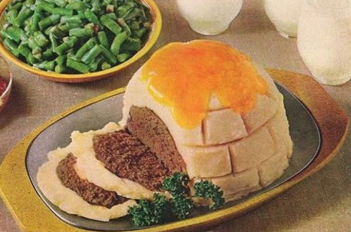

Igloo Meatloaf

Description
Here we have a fine example of the 1960s obsession with using moulds and making dishes
in the shapes of other things - in this case, an igloo. Culturally inappropriate? Perhaps.
Childish? Almost definitely. But if you are someone who likes to play with your food, dreams
of visiting the Arctic, or just wants to get a fussy child to eat something, then this might
be just the recipe for you.
Ingredients
- 2lbs ground beef
- 1/2 cup fine dry breadcrumbs
- 6T minced onion
- salt
- pepper
- 2 cups evaporated milk
- 1T butter
- 1 pack instant mashed potatoes
- slices of cheddar/American cheese
Steps
- Preheat oven to 325°F (163°C).
- In a bowl, light mix the ground beef, breadcrumbs, onion, 1 1/3 cups evaporated milk, and
salt and pepper to taste, until just blended.
- Pack firmly into a 1.5 quart bowl. Then turn out of bowl onto a shallow baking pan.
- Bake in oven for 1hr 15mins - 1hr 30mins.
- For potato frosting combine 1.5 cups water, 2/3 cup evaporated milk, butter & salt to taste.
- Bring mix just to a boil, then remove from heat.
- Stir in potatoes with a whisk, then whisk briskly.
- Frost loaf with potato mixture.
- Bake for an additional 15mins.
- Place cheese slices on top of the igloo, then return to oven until the cheese starts to melt.
- Using a light knife, carve brick-like design in cheese and potato mix for igloo surface.